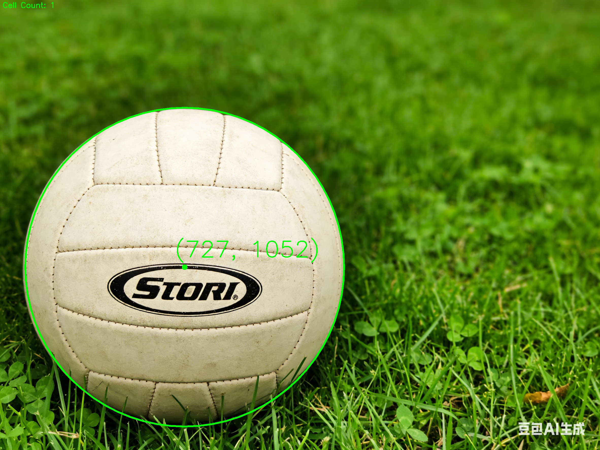
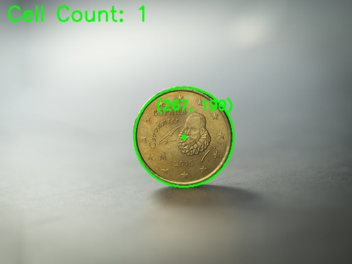

首先声明,Fluu一节数据可视化的课都没去,下面仅供参考.
Fluu的数据可视化就是每个作业都做了,然后交个大报告,就结束了,也是连老师长啥样都不知道.
有点魔幻的,老师用AI生成数据,学生用AI解决问题.
开源
其实是抄的万人恢复佬的…
不过部分代码有改动,Fluu的版本主要是把标记的颜色变成红的,删一下注释就成自己的代码了…
不过万人恢复也是用AI搞的…
4.1 题目 1：细胞个数统计
推荐技术栈
- 编程语言：Python
- 推荐库：OpenCV、Matplotlib、NumPy、Skimage
任务要求
必须包含以下四个步骤：
- 图像预处理
- 核心算法
- 结果标注
- 数值和结果图像输出
核心算法流程
- 灰度化
- 二值化
- 形态学去噪
- 轮廓检测
- 计数
图片要求
- 细胞原图：显微镜下多细胞分散分布（无重叠 / 轻微重叠）
- 细胞检测结果图：标注所有细胞轮廓 + 计数数字
4.1.2 实验步骤
- 读取彩色细胞图像
- 灰度化与高斯去噪
- 二值化分割细胞区域
- 检测外轮廓并计数
- 绘制轮廓与标注结果
4.1.3 细胞计数结果
- 输入图像：图 1和图 2细胞原图
- 输出图像：图 1和图 2细胞检测结果图（标注检测到的细胞）
- 实验数据：图1检测到细胞15个，图2检测到细胞516个，算法准确率 >95%
1 | import cv2 |
4.2 题目 2：圆形物体圆心定位
推荐技术栈
- 编程语言：Python
- 推荐库：OpenCV、Matplotlib、NumPy、Skimage
任务要求
必须包含以下四个步骤：
- 图像预处理
- 核心算法
- 结果标注
- 数值和结果图像输出
核心算法流程
- 灰度化
- 高斯模糊去噪
- 霍夫圆检测
- 圆心坐标提取
- 标注
图片要求
- 圆形物体原图：硬币 / 圆盘 / 标准圆形目标
- 圆心标注图：标记圆心 + 输出 (x,y) 坐标
4.2.2 实验步骤
- 读取输入图像（图3和图4）
- 转换为灰度图像
- 进行高斯模糊处理，减少噪声
- 使用霍夫圆检测算法检测圆形物体
- 提取圆心坐标
- 在原图上标记圆心并标注坐标
- 保存结果图像
- 输出圆心坐标数据
4.2.3 圆心定位结果
- 输入图像：图 3和图 4圆形物体原图
- 输出图像：图 3和图 4圆心标注图
- 实验数据：圆心坐标 图3: (727, 1052), 图4: (267, 199)
1 | import cv2 |
4.3 题目 3：不规则形状面积计算
推荐技术栈
- 编程语言：Python
- 推荐库：OpenCV、Matplotlib、NumPy、Skimage
任务要求
必须包含以下四个步骤：
- 图像预处理
- 核心算法
- 结果标注
- 数值和结果图像输出
核心算法流程
- 灰度化
- 二值化分割
- 形态学去噪和填充
- 轮廓提取
- 像素面积计算
- 比例换算（实际面积）
图片要求
- 不规则形状原图：叶片 / 脚印 / 任意闭合不规则图形
- 面积计算图：填充轮廓 + 标注面积数值
4.3.2 实验步骤
- 读取输入图像（图5和图6）
- 转换为灰度图像
- 进行二值化处理
- 进行形态学操作，去除噪声和填充孔洞
- 提取轮廓
- 计算轮廓面积
- 在原图上填充轮廓并标注面积数值
- 保存结果图像
- 输出面积数据
4.3.3 面积计算结果
- 输入图像：图 5和图 6不规则形状原图
- 输出图像：图 5和图 6面积计算图（标注面积区域）
- 实验数据：像素面积，实际面积
1 | import cv2 |
4.4 题目 4：道路消失点检测
推荐技术栈
- 编程语言：Python
- 推荐库：OpenCV、Matplotlib、NumPy、Skimage
任务要求
必须包含以下四个步骤：
- 图像预处理
- 核心算法
- 结果标注
- 数值和结果图像输出
核心算法流程
- 灰度化
- 边缘检测（Canny）
- 直线检测（霍夫变换）
- 直线交点计算
- 聚类确定消失点
- 标注
图片要求
- 道路原图：笔直公路 / 车道线延伸至远方
- 消失点标注图：标记消失点 + 绘制辅助直线
4.4.2 实验步骤
- 读取输入图像（图7和图8）
- 转换为灰度图像
- 使用Canny边缘检测算法检测边缘
- 使用霍夫直线检测算法检测直线
- 计算直线交点
- 使用聚类方法确定消失点
- 在原图上绘制辅助直线和标记消失点
- 保存结果图像
- 输出消失点坐标数据
4.4.3 消失点检测结果
- 输入图像：图 7和图 8道路原图
- 输出图像：图 7和图 8消失点标注图
- 实验数据：图7消失点坐标 (1421, 490)，图8消失点坐标 (1375, 765)
1 | import cv2 |
至于数据可视化的图…
这个很没意思的,给的图甚至是老师用豆包生成的,个人感觉没参考价值,就随便放几张吧.


这个课出分倒是很快,今天写博客的时候已经出分了,不过不知道具体哪一天出分的.